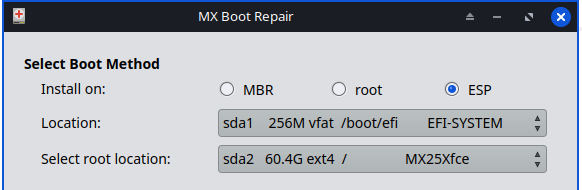
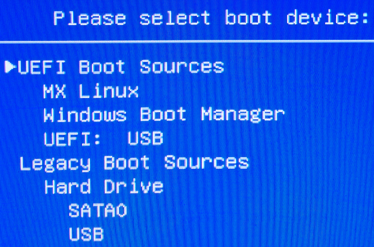
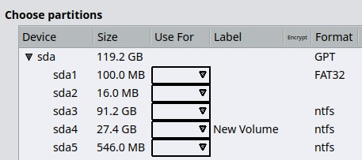
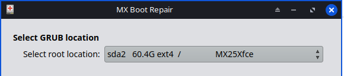
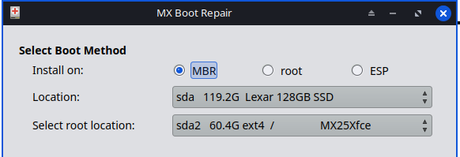

MX Boot Repair is a GUI app that can be used to recover from boot failure.
This app’s selection for “Install on” (see below) in the “Reinstall GRUB bootloader on ESP, MBR or PBR (root)” is not to be assumed as automatically correct at all times.
At times, with a very complex PC configuration there may need to be change(s) made to better match the PC under repair.

The best starting point is to live-boot from a recent USB, and select “Repair GRUB configuration file”.
Repair Grub configuration file is the most common use of this app. It should always be attempted first. Running just the “Repair GRUB configuration file” assumes that Grub is fully and properly installed in the expected location. Sometimes running a “Reinstall Grub bootloader” is needed to be done first, before Repair Grub configuration file.
When done reinstalling Grub do NOT “exit”, but go back and select “Repair GRUB configuration file” afterwards/again.
Example at below of a One Time Boot Menu. Choose the option ▸UEFI Boot Sources or Legacy Boot Sources depending on how Linux was installed. If you know that the PC’s Linux installation was in Legacy mode then pick “Legacy Boot Sources”. Other PCs screens may vary.

Windows Update has been shown to displace the MX/MX 25 boot entry by moving “Windows Boot Manager” to the first position in the UEFI Boot Order. Running UEFI Manager to correct this/verify it is NOT the cause is part of the first actions BEFORE running and repairs with this app. Removing extra/old Linuxes can be helpful in reducing visual clutter.
It is always good to have your partitions labeled. This allows better recognition for where the ESP (EFI System Partition) is located. Some Linux distro’s install do not label the ESP nor the /root.
TIP: you can open GParted and right click on partitions in order to give them labels e,g like “EFI-SYSTEM” or just “ESP” (without ” “). Labeling partitions is best done from a Live USB, as these partitions needs to be unmounted for GParted to set a label on the partition(s).
Recently in the forum there was confusion between a “Windows C drive” and the “MX Linux /root” partitions on a user’s dual boot PC. There was just a slim 1 MiB difference in these partitions sizes. Mistakes were made due to assumptions that were ‘aided’ by the lack of partition labels. Much re-installation was needed unfortunately.
Below is a view of a Windows hard disk layout prior to any partitions being labeled.

Partitions above explained:
sda1 – EFI aka ESP. Can be FAT32 or Vfat. Size ranges from 25-300 MiB. MX default is 256 MiB.
sda2 – “Windows Resources” Normally hidden in Windows File Manager. No format is normal.
sda3 – Windows “C Drive”.
sda4 – The new partition that was created for MX Linux. The MX Installer re-labels it rootMX25.
sda5 – “Windows Recovery” Normally hidden in Windows File Manager.
It is preferred to power OFF the PC, and then power on the PC back ON. This is because with a normal reboot will not clear all EFI stuff from RAM. Sometimes the MX Installer misses generating entries for other previously installed OS’s, so run in terminal:
sudo update-grubThis is a good check, to see anything was missed.
Note: in the image below shows “MX25Xfce”. This is a partition label the app displays as a hint for your choice.
1. Boot MX Linux USB. Run MX Boot Repair.
2. Select: ◉ Repair GRUB configuration file. Click ‘→ Next’.
3. On the ‘Select GRUB location‘ screen in ‘Select root location:’ choose the MX Linux / root partition.

4. Click ‘✔Apply’.
5. In the ‘Authenticate‘ pop-up enter ‘demo’ for the ‘Password:’ prompt and click ‘Authenticate’.
6. A pop-up appears: ‘The GRUB configuration file (grub.cfg) is being rebuilt’.
7. When ‘Success‘ popup asks: ‘Do you want to exit MX Boot Repair?’ click ‘✔Yes’.
You MUST be booted in UEFI mode to repair a UEFI installation with this app.
Note: in the image below “EFI-SYSTEM” and “MX25Xfce” are partition labels are displayed as hints for your choices.
1. Boot MX Linux USB in UEFI mode. Run MX Boot Repair.
2. Select: ‘◉ Reinstall GRUB bootloader on ESP, MBR or PBR (root)’. Click ‘→ Next’.
3. On the Select Boot Method:
4. Click ‘✔Apply’.
5. In the Authenticate pop-up enter ‘demo’ for the ‘Password:’ prompt and click ‘Authenticate’.
6. A pop-up ‘Select /boot location:’ asks you to choose: If no encryption is in use, choose the ESP / EFI and then click ‘✔OK’.
7. Select the ESP aka EFI partition (if encryption is not in use) with the arrow and then click ‘✔OK’.
8. MX Boot Repair runs: ‘GRUB is being installed on
9. When ‘Success‘ asks: ‘Do you want to exit MX Boot Repair?’ click ‘✔Yes’.
You MUST be booted in Legacy/MBR mode to repair a Legacy installation with this app.
Repairing the bootloader by regenerating the GRUB configuration file is the most common use of this application and should be attempted first.
Note: in the image below “Lexar 126GB SSD” is the physical “sda” device and “MX25Xfce” is a partition label. The app displays these as hints for your choices.

1. Boot MX Linux USB in Legacy mode. Run MX Boot Repair.
2. Leave selected: ‘◉ Reinstall GRUB bootloader’ on MBR. Click ‘→ Next’.
3. On Select Boot Method:
4. For ‘Install on:’ choose ‘◉ MBR’.
5. Set ‘Location:’ to the drive.
6. For ‘Select root location:’ select the / root drive partition that MX is installed on.
7. Click ‘✔Apply’.
8. In the ‘Authenticate‘ pop-up enter ‘demo’ for the ‘Password:’ prompt and click ‘Authenticate’.
9. A pop-up ‘Select /boot location:’ asks you to choose. Click ‘OK’. If a MBR type Partition Table is in use, click ‘Cancel’.
10. When ‘Success’ asks: ‘Do you want to exit MX Boot Repair?’ click ‘✔Yes’.
Use this option to repair corrupt or missing initramfs image files in /boot.
The files will take some time to be regenerated, especially on a slower PC .
From the man update-initramfs:
The update-initramfs script manages your initramfs images on your lo‐cal box. It keeps track of the existing initramfs archives in /boot. There are three modes of operation create, update or delete. You must at least specify one of those modes.
The initramfs is a gzipped cpio archive. At boot time, the kernel unpacks that archive into RAM disk, mounts and uses it as initial root file system. All finding of the root device happens in this early userspace.
Development history: Adrian
License: here.